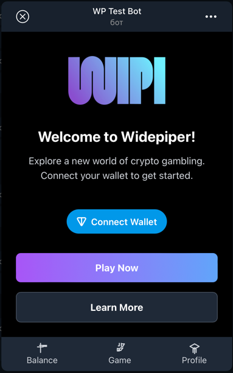
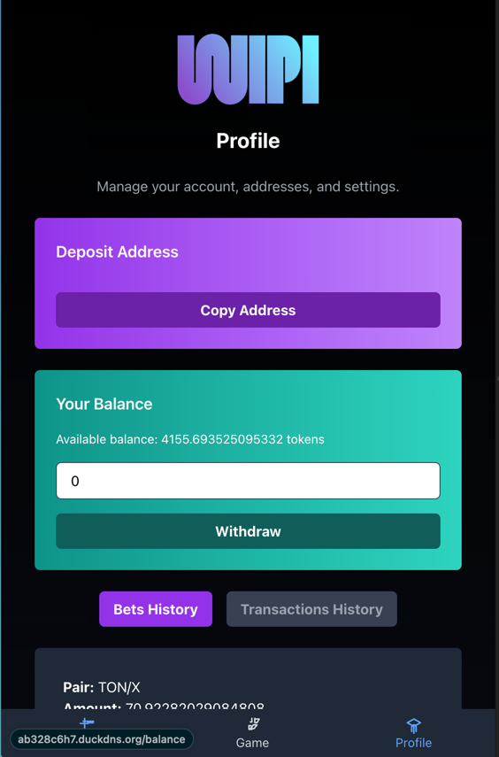

Лабораторная работа №4: Разработка интерфейсов и интеграция с серверной частью
Задача проекта
Разработать клиентские интерфейсы для работы с платформой предсказательного беттинга на базе блокчейна, настроить их взаимодействие с серверной частью.
Используемые библиотеки и их назначение
Для фронтенда:
@tonconnect/ui-react: Управление подключением кошелька и интеграцией с блокчейном Ton.react,react-router-dom: Реализация пользовательского интерфейса с навигацией.tailwindcss: Современный CSS-фреймворк для стилизации компонентов.react-select: Улучшенные выпадающие списки для выбора торговых пар.react-toastify: Уведомления об ошибках, успехах и других событиях.
Для бэкенда:
FastAPI: Обработка серверной логики, включая аутентификацию пользователей и API.SQLAlchemy: Работа с базой данных.Web3.py: Взаимодействие с блокчейном, включая вызовы смарт-контрактов.Pydantic: Определение и валидация входных данных.
Описание страниц интерфейса
Главная страница
- Описание: Начальная страница, приветствующая пользователей и предоставляющая возможность подключения кошелька.
- Основные функции:
- Приветственное сообщение и описание платформы.
- Кнопка TonConnect для подключения кошелька.
- Кнопки "Играть" и "Узнать больше" для навигации.


Логика реализации:
- Подключение кошелька: Используется
TonConnectButtonдля взаимодействия с TonConnect. - Предзагрузка данных: При помощи функций
getPairs()иfetchTime()данные о парах и текущем времени блока загружаются и сохраняются в контексте черезsetData. - Обработка ошибок: Ошибки подключения и загрузки данных отображаются в пользовательском интерфейсе.
- Переходы: Кнопки навигации управляют переходом на другие страницы с использованием
useNavigate.
Страница ставок
- Описание: Предоставляет интерфейс для выбора торговых пар и размещения ставок. При первом открытии пользователю показываются инструкции.
- Основные функции:
- Выбор торговой пары.
- Ввод предсказания (вектор цены/направления движения).
- Подтверждение и отправка ставки.

- на изображении: желтая стрелка - агрегированная ставка всех пользователей за прошлый блок, белая стрелка - ставка юзера за прошлый блок, ее же можно двигать, переключая моды осей, чтобы пояставить новую ставку.
Логика реализации:
- Трёхмерный интерфейс ставок: Пользователи видят трехмерный график, на котором агрегированные ставки всех участников за прошлый блок и своя ставка в виде стрелок на графике.
- Обратная связь: После отправки пользователь получает уведомление о статусе ставки.
Страница управления кошельком
- Описание: Позволяет пользователю управлять балансом кошелька, включая пополнение и вывод средств.
- Основные функции:
- Форма пополнения депозита через TON.
- Форма вывода средств на кошелек юзера.
- История транзакций с отображением их статуса.
- История ставок с отображением их статуса. 
Логика реализации:
- Обработка пополнения: Запросы на сервер для обработки депозитов и их конвертации в токены платформы.
- Вывод средств: Инициирование транзакции на указанный адрес (есть возможность сменить адрес).
Страница балансов юзера
- Описание: Позволяет пользователю узнать его оставшийся депозит в игре, а также количество токенов находящихся 'at risk'.
- Основные функции:
- Отображение балансов юзера.
- Кнопка для отключения кошелька.

Логика реализации:
- Обработка пополнения: Запросы на сервер для плучения балансов.
Реализация авторизации
Диаграмма процесса авторизации

Описание работы
Авторизация на платформе организована через интеграцию с блокчейном Ton и использованием механизма ton_proof. Весь процесс проходит несколько ключевых этапов:
- Подключение кошелька:
- Пользователь подключает кошелёк через интерфейс TonConnect на клиенте.
-
Клиент отправляет запрос на сервер для генерации
payload. -
Подписание proof:
- Полученный
payloadподписывается приватным ключом кошелька пользователя. -
Подписанный proof возвращается на фронтенд, а затем отправляется на сервер для проверки.
-
Проверка proof:
- Сервер валидирует подпись, проверяя её с публичным ключом пользователя в блокчейне.
-
Если proof валиден, сервер генерирует пару токенов (access и refresh) и отправляет их клиенту.
-
Хранение и использование токенов:
- Токены сохраняются в
localStorageна клиенте и используются для авторизации запросов к API. - При истечении срока действия токенов клиент автоматически обновляет их через refresh-токен.
Основные компоненты
1. Бэкенд: Генерация и проверка ton_proof
Генерация payload:
from fastapi import APIRouter
from dependencies.services.auth import get_tonproof_service
router = APIRouter(prefix='/auth', tags=['Authorization'])
@router.get('/payload')
async def generate_payload():
tonproof_service = get_tonproof_service()
payload = await tonproof_service.generate_payload()
return {"payload": payload}
Объяснение:
- Сервис get_tonproof_service генерирует временный токен (payload) для пользователя.
Проверка подписанного proof:
from fastapi import APIRouter, HTTPException
from domain.dto.auth import Credentials
from dependencies.services.auth import get_auth_service
router = APIRouter()
@router.post('/verify_payload')
async def verify_payload(credentials: Credentials):
auth_service = get_auth_service()
tokens = await auth_service.create_token(credentials)
return {
"accessToken": tokens.access_token,
"refreshToken": tokens.refresh_token
}
Объяснение:
- Принимает подписанный proof и проверяет его с использованием сервиса get_auth_service.
- Генерирует access и refresh токены.
2. Бэкенд: Обновление токенов
@router.post('/refresh')
async def refresh_tokens(refresh_token: str):
auth_service = get_auth_service()
tokens = await auth_service.refresh_token(refresh_token)
return {
"accessToken": tokens.access_token,
"refreshToken": tokens.refresh_token
}
Объяснение: - Использует refresh токен для выдачи новых токенов.
3. Фронтенд: Контекст авторизации
import React, { createContext, useContext } from "react";
import { verifyPayload } from "../services/api";
const AuthContext = createContext();
export const AuthProvider = ({ children }) => {
const loginWithProof = async (proofData) => {
const { accessToken, refreshToken } = await verifyPayload(proofData);
localStorage.setItem("authToken", accessToken);
localStorage.setItem("refreshToken", refreshToken);
};
return (
<AuthContext.Provider value={{ loginWithProof }}>{children}</AuthContext.Provider>
);
};
Объяснение:
- Функция loginWithProof выполняет запрос на сервер для проверки proof и сохраняет токены в локальное хранилище.
4. Фронтенд: Интерсепторы для обновления токенов
apiClient.interceptors.response.use(
(response) => response,
async (error) => {
if (error.response?.status === 401) {
await refreshTokens();
return apiClient.request(error.config);
}
return Promise.reject(error);
}
);
Объяснение: - Если сервер возвращает 401, автоматически вызывается функция обновления токенов.
Пояснение:
1. Пользователь подключает кошелёк.
2. Клиент отправляет запрос на сервер для генерации ton_proof.
3. Полученный proof подписывается в кошельке и возвращается клиенту.
4. Клиент отправляет подписанный proof на сервер для проверки.
5. Сервер выдаёт токены доступа и обновления.